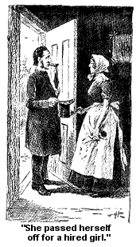
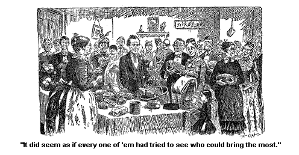
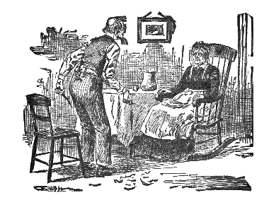

THE CHERITY OF THE JONESVILLIANS.
We have been havin' a pound party here in Jonesville. There wuz a lot of children left without any father or mother, nobody only an old grandma to take care of 'em, and she wuz half bent with the rheumatiz, and had a swelled neck, and lumbago and fits.
They lived in an old tumble-down house jest outside of Jonesville. The father wuz, I couldn't deny, a shiftless sort of a chap, good-natured, always ready to obleege a neighbor, but he hadn'nt no faculty. And I don't know, come to think of it, as anybody is any more to blame if they are born without a faculty, than if they are born with only one eye. Faculty is one of the things that you can't buy.
He loved to hunt. That is, he loved to hunt some kinds of things. He never loved to hunt stiddy, hard work, and foller on the trail of it till he evertook success and captured it. No, he druther hunt after catamounts and painters, in woods where catamounts haint mounted, and painters haint painted sence he wuz born.
He generally killed nothin' bigger than red squirrels and chipmunks. The biggest game he ever brought down wuz himself. He shot himself one cold day in the fall of the year. He wuz gettin' over a brush fence, they s'posed the gun hit against somethin' and went off, for they found him a layin' dead at the bottom of the fence.
I always s'posed that the shock of his death comin' so awful sudden unto her, killed his wife. She had been sick for a long spell, she had consumption and dropsy, and so forth, and so forth, for a long time, and after he wuz brought in dead, she didn't live a week. She thought her eyes of him, for no earthly reason as I could ever see. How strange, how strange a dispensation of Providence it duz seem, that some women love some men, and vicy versey and the same.
But she did jest about worship him, and she died whisperin' his name, and reachin' out her hands as if she see him jest ahead of her. And I told Josiah I didn't know but she did. I shouldn't wonder a mite if she did see him, for there is only the veil of mystery between us and the other world at any time, and she had got so nigh to it, that I s'pose it got so thin that she could see through it.
Just as you can see through the blue haze that lays before our forest in Injun summer. Come nigh up to it and you can see the silvery trunks of the maples and the red sumac leaves, and the bright evergreens, and the forms of the happy hunters a passin' along under the glint of the sunbeams and the soft shadows.
They died in Injun summer. I made a wreath myself of the bright-colored leaves to lay on their coffins. Dead leaves, dead to all use and purpose here, and yet with the bright mysterious glow upon them that put me in mind of some immortal destiny and blossoming beyond our poor dim vision. Jane Smedley wuz a good woman, and so wuz Jim, good but shiftless.
But I made the same wreath for her and Jim, and the strange mellow light lay on both of 'em, makin' me think in spite of myself of some happy sunrisin' that haply may dawn on some future huntin' ground, where poor Jim Smedley even, may strike the trail of success and happiness, hid now from the sight of Samantha, hid from Josiah.
Wall, they died within a week's time of each other, and left nine children, the oldest one of 'em not quite fifteen. She, the oldest one, wuz a good girl, only she had the rickets so that when she walked, she seemed to walk off all over the house backwards, and sideways, and every way, but when she sot down, she wuz a good stiddy girl, and faithful; she took after her mother, and her mother took after her grandmother, so there wuz three takin' after each other, one right after the other.
Jane wuz a good, faithful, hard-workin' creeter when she wuz well, brought up her children good as she could, learnt 'em the catechism, and took in all kinds of work to earn a little somethin' towards gettin' a home for 'em; she and her mother both did, her mother lived with 'em, and wuz a smart old woman, too, for one that wuz pretty nigh ninety. And she wuzn't worrysome much, only about one thing -- she wanted a home, wanted a home dretfully. Some wimmen are so; she had moved round so much, from one poor old place to another, that she sort o' hankered after bein' settled down into a stiddy home.
Wall, there wuz eight children younger than Marvilla, that wuz the oldest young girl's name. Eight of 'em, countin' each pair of twins as two, as I s'pose they ort. The Town buried the father and mother, which wuz likely and clever in it, but after that it wouldn't give only jest so much a week, which wuz very little, because it said, Town did, that they could go to the poor-house, they could be supported easier there.
I don't know as the Town could really be blamed for sayin' it, and yet it seemed kinder mean in it, the Town wuz so big, and the children, most of 'em, wuz so little.
But any way, it wuz jest sot on it, and there wuz the end of it, for you might jest as well dispute the wind as to dispute the Town when it gets sot.
Wall, the old grandma said she would die in the streets before she would go to the poor-house. She had come from a good family in the first place,
They say she run away and left a good home and got married, and did dretful poor in the married state. He waz shiftless and didn't have nothin' and didn't lay up any. And she didn't keep any of her old possessions only jest her pride. She kept that, or enough of it to say that she would die on the road before she would go to the poor-house. And once I see her cry she wanted a home so bad.
And lots of folks blamed her for it, blamed the old woman awfully. They said pride wuz so wicked. Wimmen who would run like deers if company came when they wuzn't dressed up slick, they would say the minute they got back into the room, all out of breath with hurryin' into their best clothes, they'd say a pantin' "That old woman ought to be made to go to the poorhouse, to take the pride out of her, pride wuz so awfully, dretfully wicked, and it wuz a shame that she wuz so ongrateful as to want a home of her own." And then they would set down and rest.
Wall, the family wuz in a sufferin' state. The Town allowed 'em one dollar a week. But how wuz ten human beings to live on a dollar a week. The children worked every chance they got, but they couldn't earn enough to keep 'em in shoes, let alone other clothin' and vittles. And the old house wuz too cold for 'em to stay in durin' the cold weather, it wuz for Grandma Smedley, anyway, if the children could stand it she couldn't. And what wuz to be done. A cold winter wuz a cumin' on, and it wouldn't delay a minute because Jim Smedley had got shot, and his wife had follered him, into, let us hope, a happier huntin' ground than he had ever found in earthly forests.
Wall, I proposed to have a pound party for 'em. I said they might have it to our house if they wanted it, but if they thought they wanted it in a more central place (our house wuz quite a little to one side), why we could have it to the schoolhouse.
I proposed to Josiah the first one. He wuz a settin' by the fire relapsed into silence. It wuz a cold night outside, but the red curtains wuz down at our sitting-room winders, shettin' out the cold drizzlin' storm of hail and snow that wuz a deseendin' onto the earth. The fire burned up warm and bright, and we sot there in our comfortable home, with the teakettle singin' on the stove, and the tea-table set out cosy and cheerful, for Josiah had been away and I had waited supper for him.
As I sot there waitin' for the tea-kettle to bile (and when I say bile, I mean bile, I don't, mean simmer) the thought of the Smedleys would come in. The warm red curtains would keep the storm out, but they couldn't keep the thought of the children, and the feeble old grandmother out of the room. They come right in, through the curtains, and the firelight, and everything, and sot right down by me and hanted me.
And what curious creeters thoughts be, haint they? and oncertain, too. You may make all your plans to get away from 'em. You may shet up your doors and winders, and set with a veil on and an umbrell up - but good land! how easy they jest ontackle the doors and windows, with no sounds of ontacklin' and come right in by you.
First you know there they be right by the side of you, under your umbrell, under your veil, under your spectacles, a lookin' right down into your soul, and a hantin' you.
And then agin, when you expect to be hanted by 'em, lay out to, why, they'll jest stand off somewhere else, and don't come nigh you. Don't want to. Oncertain creeters, thoughts be, and curious, curious where they come from, and how.
Why, I got to thinkin' about it the other day, and I got lost, some like children settin' on a log over a creek a ridin'; there they be, and there the log is, but they don't seem to be there, they seem to be a floatin' down the water.
And there I wuz, a settin' in my rockin' chair, and I seemed to be a floatin' down deep water, very deep. A thinkin' and a wonderin'. A thinkin' how all through the ages what secrets God had told to man when the time had come, and the reverent soul below was ready to hear the low words whispered to his soul, and a wonderin' what strange revelation God held now, ready to reveal when the soul below had fitted itself to hear, and comprehend it.
Ah! such mysteries as He will reveal to us if we will listen. If we wait for God's voice. If we did not heed so much the confusing clamor of the world's voices about us. Emulation, envy, anger, strife, jealousy; if we turned our heads away from these discords, and in the silence which is God's temple, listened, listened, -- who knows the secrets He would make known to us?
Secrets of the day, secrets of the night, the sunshine, the lightning, the storm. The white glow of that wonderful light that is not like the glow of the sun or of the moon, but yet lighteth the world. That strange light that has a soul - that reads our thoughts, translates our wishes, overleaps distance, carrying our whispered words after holding our thoughts for ages, and then unfoldin' 'em at will. What other wondrous mysteries lie concealed, wrapped around by that soft pure flame, mysteries that shall lie hidden until some inspired eye shall be waiting, looking upward at the moment when God's hand shall draw back the shining veil for an instant, and let him read the glowing secret.
Secrets of language! shall some simple power, some symbol be revealed, and the nations speak together?
Secrets of song! shall some serene, harmonious soul catch the note to celestial melodies?
Secrets of sight! shall the eyes too dim now, see the faces of the silent throngs that surround them, "the great cloud of witnesses"?
Secrets of the green pathways that lead up through the blue silent fields of space - shall we float from star to star?
Secrets of holiness! shall earthly faces wear the pure light of the immortals?
But oh! who shall be the happy soul that shall be listening when the time has fully come and He shall reveal His great secret? The happy soul listening so intently that it shall catch the low, clear whisper.
Listening, maybe, through the sweet twilight shadows for the wonderful secret, while the silver shallop of the moon is becalmed over the high northern mountains, as if a fleet of heavenly guests had floated down through the clear ocean waves of the sky to listen too - to hear the wonderful heavenly secret revealed to man - and a clear star looks out over the glowing rose of the western heavens, looking down like God's eye, searching his soul, searching if it be worthy of the great trust.
Maybe it will be in the fresh dawning of the day, that the great secret will grow bright and clear and luminous, as the dawning of the light.
Maybe it will be in the midst of the storm - a mighty voice borne along by the breath of the wind and the thunder, clamoring and demanding the hearer to listen.
Oh! if we were only good enough, only pure enough, what might not our rapt vision discern?
But we know not where or when the time shall be fully come, but who, who, shall be the happy soul that shall, at the time, be listening?
Oh! how deep, how strange the waters wuz, and how I floated away on 'em, and how I didn't. For there I wuz a settin in my own rockin' chair and there opposite me sot my own Josiah a whittlin', for the World hadn't come, and he wuz restless and ill at ease, and time hung heavy on his hands.
There I sot the same Samantha - and the thought of the Smedleys, the same old Smedleys, was a hantin' of me, the same old hant, and I says to my Josiah, says I: "Josiah, I can't help thinkin' about the Smedleys," says I. "What do you think about havin' a pound party for 'em, and will you take holt, and do your part?"
"Good land, Samantha! Are you crazy? Crazy as a loon? What under the sun do you want to pound the Smedleys for? I should think they had trouble enough without poundin' 'em. Why," says he, "the old woman couldn't stand any poundin' at all, without killin' her right out and out, and the childern haint over tough any of 'em. Why, what has got into you? I never knew you to propose anything of that wicked kind before. I sha'n't have anything to do with it. If you want 'em pounded you must get your own club and do your own poundin'."
Says I, "I don't mean poundin' 'em with a club, but let folks buy a pound of different things to eat and drink and carry it to 'em, and we can try and raise a little money to get a warmer horse for 'em to stay in the coldest of the weather."
"Oh!" says he, with a relieved look. "That's a different thing. I am willin' to do that. I don't know about givin' 'em any money towards gettin' 'em a home, but I'll carry 'em a pound of crackers or a pound of flour, and help it along all I can."
Josiah is a clever creeter (though close), and he never made no more objections towards havin' it.
Wall, the next day I put on my shawl and hood (a new brown hood knit out of zephyr worsted, very nice, a present from our daughter Maggie, our son Thomas Jefferson's wife), and sallied out to see what the neighbor's thought about it.
The first woman I called on wuz Miss Beazley, a new neighbor who had just moved into the neighborhood. They are rich as they can be, and I expected at least to get a pound of tea out of her.
She said it wuz a worthy object, and she would love to help it along, but they had so many expenses of their own to grapple with, that she didn't see her way clear to promise to do anything. She said the girls had got to have some new velvet suits, and some sealskin sacques this winter, and they had got to new furnish the parlors, and send their oldest boy to college, and the girls wanted to have some diamond lockets, and ought to have 'em but she didn't know whether they could manage to get them or not, if they did, they had got to scrimp along every way they could. And then they wuz goin' to have company from a distance, and had got to get another girl to wait on 'em. And though she wished the poor well, she felt that she could not dare to promise a cent to 'em. She wished the Smedley family well -- dretful well -- and hoped I would get lots of things for 'em. But she didn't really feel as if it would be safe for her to promise'em a pound of anything, though mebby she might, by a great effort, raise a pound of flour for 'em, or meal.
Says I dryly (dry as meal ever wuz in its dryest times), "I wouldn't give too much. Though," says I, "A pound of flour would go a good ways if it is used right." And I thought to myself that she had better keep it to make a paste to smooth over things.
Wall, I went from that to Miss Jacob Hess'es, and Miss Jacob Hess wouldn't give anything because the old lady wuz disagreeable, old Grandma Smedley, and I said to Miss Jacob Hess that if the Lord didn't send His rain and dew onto anybody only the perfectly agreeable, I guessed there would be pretty dry times. It wuz my opinion there would be considerable of a drouth.
There wuz a woman there a visitin' Miss Hess -- she wuz a stranger to me and I didn't ask her for anything, but she spoke up of her own accord and said she would give, and give liberal, only she wuz hampered. She didn't say why, or who, or when, but she only sez this that "she wuz hampered," and I don't know to this day what her hamper wuz, or who hampered her.
And then I went to Ebin Garven'ses, and Miss Ebin Garven wouldn't help any because she said "Joe Smedley had been right down lazy, and she couldn't call him anything else."
"But," says I, "Joe is dead, and why should his children starve because their pa wasn't over and above smart when he wuz alive?" But she wouldn't give.
Wall, Miss Whymper said she didn't approve of the manner of giving. Her face wuz all drawed down into a curious sort of a long expression that she called religus and I called somethin' that begins with "h-y-p-o" -- and I don't mean hypoey, either.
No, she couldn't give, she said, because she always made a practise of not lettin' her right hand know what her left hand give.
And I said, for I wuz kinder took aback, and didn't think, I said to her, a glancin' at her hands which wuz crossed in front of her, that I didn't see how she managed it, unless she give when her right hand was asleep.
And she said she always gave secret.
And I said, "So I have always s'posed -- very secret."
I s'pose my tone was some sarcastic, for she says, "Don't the Scripter command us to do so?"
Says I firmly, "I don't believe the Scripter means to have us stand round talkin' Bible, and let the Smedleys starve," says I. "I s'pose it means not to boast of our good deeds."
Says she, "I believe in takin' the Scripter literal, and if I can't git my stuff there entirely unbeknown to my right hand I sha'n't give."
"Wall," says I, gettin' up and movin' towards the door, "you must do as you're a mind to with fear and tremblin'."
I said it pretty impressive, for I thought I would let her see I could quote Scripter as well as she could, if I sot out.
But good land! I knew it wuz a excuse. I knew she wouldn't give nothin' not if her right hand had the num palsy, and you could stick a pin into it -- no, she wouldn't give, not if her right hand was cut off and throwed away.
Wall, Miss Bombus, old Dr. Bombus'es widow, wouldn't give -- and for all the world -- I went right there from Miss Whymper'ses. Miss Bombus wouldn't give because I didn't put the names in the Jonesville Augur or Gimlet, for she said, "Let your good deeds so shine."
"Why," says I, "Miss Whymper wouldn't give because she wanted to give secreter, and you won't give because you want to give publicker, and you both quote Scripter, but it don't seem to help the Smedleys much."
She said that probably Miss Whymper was wrestin' the Scripter to her own destruction."
"Wall," says I, "while you and Miss Whymper are a wrestin' the Scripter, what will become of the Smedleys? It don't seem right to let them 'freeze to death, and starve to death, while we are a debatin' on the ways of Providence."
But she didn't tell, and she wouldn't give.
A woman wuz there a visitin', Miss Bombus'es aunt, I think, and she spoke up and said that she fully approved of her niece Bombus'es decision. And she said, "As for herself, she never give to any subject that she hadn't thoroughly canvassed."
Says I, "There they all are in that little hut, you can canvass them at any time. Though," says I, thoughtfully, "Marvilla might give you some trouble." And she asked why.
And I told her she had the rickets so she couldn't stand still to be canvassed, but she could probably follow her up and canvass her, if she tried hard enough. And says I, "There is old Grandma Smedley, over eighty, and five children under eight, you can canvass them easy."
Says she, "The Bible says, `Search the Sperits.'"
And I was so wore out a seein' how place after place, for three times a runnin the Bible was lifted up and held as a shield before stingy creeters, to ward off the criticism of the world and their own souls, that I says to myself -- loud enough so they could hear me, mebbe, "Why is it that when anybody wants to do a mean, ungenerous act, they will try to quote a verse of Scripter to uphold 'em, jest as a wolf will pull a lock of pure white wool over his wolfish foretop, and try to look innocent and sheepish."
I don't care if they did hear me, I wuz on the step mostly when I thought it, pretty loud.
Wall, from Miss Bombus'es I went to Miss Petingill's.
Miss Petingill is a awful high-headed creeter. She come to the door herself and she said, I must excuse her for answerin' the door herself. (I never heard the door say anything and don't believe she did, it was jest one of her ways.) But she said I must excuse her as her girl wuz busy at the time.
She never mistrusted that I knew her hired girl had left, and she wuz doin' her work herself. She had ketched off her apron I knew, as she come through the hall, for I see it a layin' behind the door, all covered with flour. And after she had took me into the parlor, and we had set down, she discovered some spots of flour on her dress, and she said she "had been pastin' some flowers into a scrap book to pass away the time." But I knew she had been bakin' for she looked tired, tired to death almost, and it wuz her bakin' day. But she would sooner have had her head took right off than to own up that she had been doin' housework -- why, they say that once when she wuz doin' her work herself, and was ketched lookin' awful, by a strange minister, that she passed herself off' for a hired girl and said, "Miss Petingill wasn't to home, and when pressed hard she said she hadn't "the least idee where Miss Petingill wuz."

Jest think on 't once -- and there she wuz herself. The idee!
Wall, the minute I sot down before I begun my business or anything, Miss Petingill took me to do about puttin' in Miss Bibbins President of our Missionary Society for the Relief of Indignent Heathens.
The Bibbins'es are good, very good, but poor.
Says Miss Petingill: "It seems to me as if there might be some other woman put in, that would have had more influence on the Church."
Says I, "Haint Miss Bibbins a good Christian sister, and a great worker?"
"Why yes, she wuz good, good in her place. But," she said, "the Petingills hadn't never associated with the Bibbins'es."
And I asked her if she s'posed that would make any difference with the heathen; if the heathen would be apt to think less of Miss Bibbins because she hadn't associated with the Petingills?
And she said, she didn't s'pose "the heathens would ever know it; it might make some difference to 'em if they did," she thought, "for it couldn't be denied," she said, "that Miss Bibbins did not move in the first circles of Jonesville."
It had been my doin's a puttin' Miss Bibbins in and I took it right to home, she meant to have me, and I asked her if she thought the Lord would condemn Miss Bibbins on the last day, because she hadn't moved in the first circles of Jonesville?
And Miss Petingill tosted her head a little, but had to own up, that she thought "He wouldn't."
"Wall, then," sez I, "do you s'pose the Lord has any objections to her working for Him now?"
"Why no, I don't know as the Lord would object."
"Wall," sez I, "we call this work the Lord's work, and if He is satisfied with Miss Bibbins, we ort to be."
But she kinder nestled round, and I see she wuzn't satisfied, but I couldn't stop to argue, and I tackled her then and there about the Smedleys. I asked her to give a pound, or pounds, as she felt disposed.
But she answered me firmly that she could't give one cent to the Smedleys, she wuz principled against it.
And I asked her, "Why?"
And she said, because the old lady wuz proud and wanted a home, and she thought that pride wuz so wicked, that it ort to be put down.
Wall, Miss Huff, Miss Cephas Huff, wouldn't give anything because one of the little Smedleys had lied to her. She wouldn't encourage lyin'.
And I told her I didn't believe she would be half so apt to reform him on an empty stomach, as after he wuz fed up. But she wouldn't yield.
Wall, Miss Daggett said she would give, and give abundant, only she didn't consider it a worthy object.
But it wuzn't nothin' only a excuse, for the object has never been found yet that she thought wuz a worthy one. Why, she wouldn't give a cent towards painting the Methodist steeple, and if that haint a high and worthy object, I don't know what is. Why, our steeple is over seventy feet from the ground. But she wouldn't help us a mite -- not a single cent.
Take such folks as them and the object never suits 'em. They won't come right out and tell the truth that they are too stingy and mean to give away a cent, but they will always put the excuse onto the object -- the object don't suit 'em.
Why, I do believe it is the livin' truth that if the angel Gabriel wuz the object, if he wuz in need and we wuz gittin' up a pound party for him -- she would find fault with Gabriel, and wouldn't give him a ounce of provisions.
Yes, I believe it -- I believe they would tost their heads and say, they always had had their thoughts about anybody that tooted so loud -- it might be all right but it didn't look well, and would be apt to make talk. Or they would say that he wuz shiftless and extravagant a loafin' round in the clouds, when he might go to work -- or that he might raise the money himself by selling the feathers offen his wings for down pillers -- or some of the rest of the Gabriel family might help him -- or something, or other -- anyway they would propose some way of gittin' out of givin' a cent to Gabriel. I believe it as much as I believe I live and breathe; and so does Josiah.
Wall, Miss Mooney wouldn't give anything because she thought Jane Smedley wuzn't so sick as she thought she wuz; she said "she was spleeny."
And I told Miss Mooney that when a woman was sick enough to die, I thought she ort to be called sick.
But Miss Mooney wouldn't give up, and insisted to the very last that Miss Smedley wuz hypoey and spleeny -- and thought she wuz sicker than she really wuz. And she held her head and her nose up in a very disagreeable and haughty way, and said as I left, that she never could bear to help spleeny people.
Wall, all that forenoon did I traipse through the street and not one cent did I get for the Smedleys, only Miss Gowdey said she would bring a cabbage and Miss Deacon Peedick and Miss Ingledue partly promised a squash apiece. And I mistrusted that they give 'em more to please me than anything else.
Wall, I wuz clean discouraged and beat out, and so I told Josiah. But he encouraged me some by sayin':
"Wall, I could have told you jest how it would be," and, "You would have done better, Samantha, to have been to home a cookin' for your own famishin' family." And several more jest such inspirin' remarks as men will give to the females of their families when they are engaged in charitable enterprises.
But I got a good, a very good dinner, and it made me feel some better, and then I haint one to give up to discouragements, anyway.
So I put on a little better dress for after noon, and my best bonnet and shawl, and set sail again after dinner.
And if I ever had a lesson in not givin' up to discouragements in the first place I had it then. For whether it wuz on account of the more dressy look of my bonnet and shawl -- or whether it wuz that folks felt cleverer in the afternoon -- or whether it wuz that I had gone to the more discouragin' places in the forenoon, and the better ones in the afternoon -- or whether it wuz that I tackled on the subject in a better way than I had tackled 'em -- whether it wuz for any of these reasons, or all of 'em or somethin' -- anyway my luck turned at noon, 12 M., and all that afternoon I had one triumph after another -- place after place did I collect pound or pounds as the case may be (or collected the promises of 'em, I mean). I did splendid, and wuz prospered perfectly amazing -- and I went home feelin' as happy and proud as a king or a zar.
And the next Tuesday evenin' we had the pound party. They concluded to have it to our house. And Thomas Jefferson and Maggie, and Tirzah Ann and Whitefield came home early in the afternoon to help trim the parlor and setin' room with evergreens and everlastin' posies, and fern leaves.
They made the room look perfectly beautiful. And they each of 'em, the two childern and their companions, brought home a motto framed in nice plush and gilt frames, which they put up on each side of the settin' room, and left them there as a present to their pa and me. They think a sight of us, the childern do -- and visey versey, and the same.
One of 'em wuz worked in gold letters on a red back-ground "Bear Ye One Another's Burdens." And the other wuz "Feed my Lambs."
They think a sight on us, the childern do -- they knew them mottoes would highly tickle their pa and me. And they did seem to kinder invigorate up all the folks that come to the party.
And they wuz seemingly legions. Why, they come, and they kept a comin'. And it did seem as if every one of 'em had tried to see who could bring the most. Why, they brought enough to keep the Smedleys comfortable all winter long. It wuz a sight to see 'em.

It wuz a curious sight, too, to set and watch what some of the folks said and done as they brought their pounds in.
I had to be to the table all the time a'most, for I wuz appointed a committee, or a board -- I s'pose it would be more proper to call myself a board, more business like. Wall, I wuz the board appointed to lay the things on -- to see that they wuz all took care of, and put where they couldn't get eat up, or any other casuality happen to 'em.
And I declare if some of the queerest lookin' creeters didn't come up to the table and talk to me. There wuz lots of 'em there that I didn't know, folks that come from Zoar, Jim Smedley's old neighborhood.
There wuz a long table stretched acrost one end of the settin' room, and I stood behind it some as if I wuz a dry goods merchant or grocery, and some like a preacher.
And the women would come up to me and talk. There wuz one woman who got real talkative to me before the evenin' wuz out. She said her home wuz over two miles beyond Zoar.
She had a young babe with her, a dark complexioned babe, with a little round black head, that looked some like a cannon ball. She said she had shingled the child that day about eight o'clock in the forenoon; she talked real confidential to me.
She said the babe had sights of hair, and she told her husband that day that if he would shingle the babe she would come to the party and if he wouldn't shingle it she wouldn't come. It seemed they had had a altercation on the subject; she wanted it shingled and he didn't. But it seemed that ruther than stay away from the party -- he consented, and shingled it. So they come.
They brought a eight pound loaf of maple sugar and two dozen eggs. They did well. Then there wuz another woman who would walk her little girl into the bedroom every few minutes, and wet her hair, and comb it over, and curl it on her fingers. The child had a little blue flannel dress on, with a long plain waist, and a long skirt gethered on full all round. Her hair lay jest as smooth and slick as glass all the time, but five times did she walk her off, and go through with that performance. She brought ten yards of factory cloth, and a good woollen petticoat for the old grandma. She did first-rate.
And then there wuz another woman who stayed by the table most all the evenin'. She would gently but firmly ask everybody who brought anything, what the price of the article wuz -- and then she would tackle the different women who come up to the table for patterns. I do believe she got the pattern of every bask waist there wuz there, and every mantilly.
And Abram Gee brought twenty-five loaves of bread -- of different sizes, but all on 'em good. And he looked at Ardelia Tutt every minute of the time. And Ardelia brought a lot of verses, -- "Stanzas on a Grandmother." I didn't think they would do Grandma Smedley much good, and then on the other hand I didn't s'pose they would hurt her any.
But we had a splendid good time after the things wuz all brought in -- of course, bein' a board the fore part of the evenin' I naturally had a harder time than I did the latter part, after I had got over it.
The children, Thomas J., and Tirzah Ann, and Ardelia Tutt, and Abram Gee, and some of the rest of the young folks sung and played some beautiful pieces, and they had four tablows, which wuz perfectly beautiful.
And then we passed good nice light biscuit and butter, and hot coffee, and pop corn and apples. And it did seem, and all the neighbors said so, that it wuz the very best party they had ever attended to.
And before they went away they made a motion some of the responsable men did -- some made the motions and some seconded 'em -- that they would adjourn till jest one year from that night, when if the Smedleys was still alive and in need -- we would have jest such a party ag'in.
And at the last on't Elder Minkley made a prayer -- a very thankful and good prayer, but short. And then they went home.
Wall, the next mornin' we started to carry the things to the Smedleys. It wuz very early, for Josiah had got to go clear to Loontown on business, and I wuz goin' to stay with the childern till he got back.
It wuz a very cold mornin'. We hadn't heard from the Smedleys for two or three days, because we wanted to surprise 'em, so we didn't want to give 'em a hint beforehand of what we wuz a doin'. So, as I say, it wuz a number of days sense we had heard from 'em, and the weather wuz cold.
When we got to the door it seemed to be dretful still there inside. And there wuz some white frost on the latch jest as if a icy, white hand had onlatched the door, and had laid on it last.
We rapped, but nobody answered. And then we opened the door and went in, and there they all lay asleep. The children waked up. But old Grandma didn't.
Grandma Smedley had took the poor old coverin's all off from herself, and put 'em round the youngest baby, little Jim. And he lay there all huddled up tight to his Grandma, with his red cheek close to her white one, for he loved her.
Josiah cried and wept, and wept and cried onto his bandana -- but I didn't.
The tears run down my face some, to see the childern feel so bad when Grandma couldn't speak to 'em.
But I knew that the childern would be took care of now, I knew the Jonesvillians would be all rousted up and sorry enough for 'em, and would be willin' to do anything now, when it wuz some too late.
And I felt that I couldn't cry nor weep (and told Josiah so), the tears jest dripped down my face in a stream, but I wouldn't weep -- for as I said to myself:
While the Jonesvillians had been a disputin' back and forth, and wrestin'
Scripter, and the meanin' of Providence in regard to helpin' Grandma Smedley
and gittin' her a comfortable place to stay in, and somethin' to eat, the
Lord himself had took the case in hand and had gin her a home and the bread
that satisfies."
